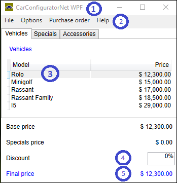

| Version 6.0.3 |
Please find the sample test-suites in the subdirectories
demo/carconfigWpf and demo/carconfigForms of the QF-Test
installation directory.
The sample test-suites use the dependency SUT_started
in the package qfs.autowin.dependencies of the standard library
to start the demo application.
The node
actually starts the demo. The
qfs.autowin.checkForExistence
waits for the demo application to appear before passing on control to the test-case itself.
The demo test-suite makes use of the dependency functionality which enables you to manage the set up and clean up requirements of your tests very efficiently. In short, in a test-case the dependency functionality runs the setup node before passing control to the test-case, thus making sure that the requirements implemented in the setup node are met before running the test-case. At the end of the test-case, the cleanup node is not executed by default. Only in the next test-case it may be executed if required by the dependency of that test-case, either because it calls a different dependency or the characteristic variables of the dependency have changed. For more information about dependencies please refer to the tutorial or the manual, chapter Dependency nodes.
For general information on the start of a native windows application please refer to subsection 48.1.1.
The next step after starting the SUT is to get an overview of the GUI elements
of the application. In this example we will use the procedure
qfs.autowin.helpers.dumpComponents. The output
will be written to the QF-Test terminal.
In the following we will have a look at the output of dumpComponents() for some of the GUI elements of the WPF demo application.
|
|  | ||
|
| Figure 48.2: The WPF demo application | ||
This shows a typical set of identifiers for the window itself. You can address it via its name, which seems to be unique.
This GUI element has an AutomationId. Use this to identify the GUI element unambiguously. Of course, you may also use its name 'Help' or the ControlType (or ClassName) 'MenuItem' along with the index '4'.
The table cell can either be addressed by its name or by the ControlType along with the name. If you want to address the table cell via an index it would make sense to use the ClassName and not the ControlType as the same ControlType 'Custom' is used for non table cells as well. An AutomationId has not been implemented.
The input field can be addressed via the AutomationId or the ControlType or ClassName along with the index 0.
Use the AutomationId to identify the GUI element as the name varies according to the text displayed.
Please find general information in subsection 48.1.2.
| Last update: 9/6/2022 Copyright © 1999-2022 Quality First Software GmbH |